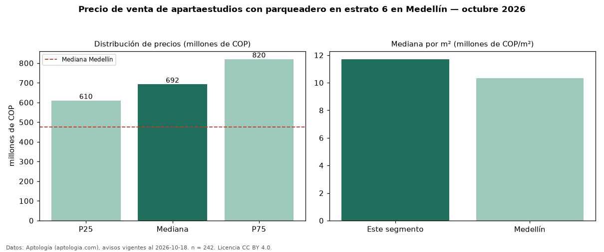

Precio de venta de apartaestudios con parqueadero en estrato 6 en Medellín — octubre 2026
Con 242 avisos vigentes, el precio mediano de apartaestudios con parqueadero en estrato 6 en venta en Medellín es COP 692 millones. Eso es 5 % más que la mediana de los apartaestudios en estrato 6 en venta de Medellín (COP 662 millones, n = 288); este segmento reúne el 84 % de esos avisos. Por metro cuadrado, la mediana es COP 11,71 millones/m² (n = 236), 2 % por debajo de los apartaestudios en estrato 6 en venta de Medellín (COP 11,91 millones/m²). El área mediana anunciada es 58 m². La administración mediana declarada es COP 498.500 al mes (n = 156). La mediana de todos los apartaestudios en venta de Medellín es COP 475 millones (+46 % de diferencia). La mitad central de los avisos va de COP 610 millones a COP 820 millones (razón 1,3), una dispersión baja. Datos: Aptología (aptologia.com), CC BY 4.0 — https://www.aptologia.com/venta/medellin. Archivos: PDF, CSV con las cifras y gráfica PNG.

| Avisos únicos | 242 |
|---|---|
| Percentil 25 | COP 610.000.000 |
| Mediana | COP 692.500.000 |
| Percentil 75 | COP 820.000.000 |
| Mediana por m² | COP 11.708.431 |
Fuente: avisos vigentes de portales inmobiliarios recopilados por Aptología, deduplicados (mínimo 30 avisos únicos por celda). Precios pedidos, no cerrados. Fecha: 2026-10-18.